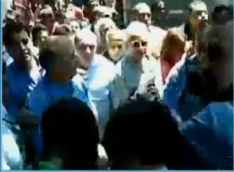
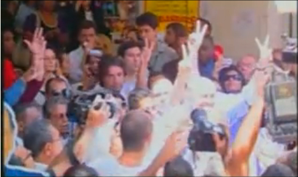
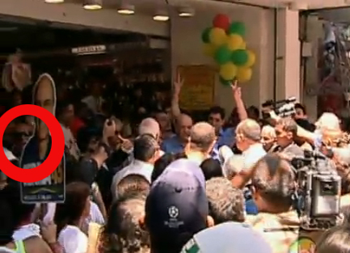
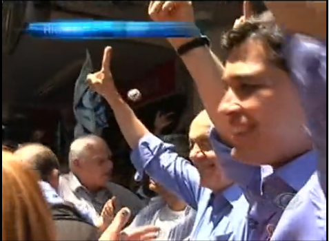

Jorge Furtado


Faltando uma semana para a eleição, o que nos resta - se as pesquisas do Voz Populi, do Ibope e do Datafolha que apontam vantagem superior a 10 milhões de votos para Dilma Rousseff não estiverem erradas - é o empolgante debate: o que foi, afinal, que atingiu a cabeça de José Serra? Bolinha de papel ou rolo de fita?
A bolinha de papel todo mundo viu, não pode ser ela o tal “artefato” (Merval Pereira) de “cerca de dois quilos” (Indio da Costa) que levou José Serra a fazer um exame de tomografia computadorizada e a ocupar metade do seu programa de televisão com imagens de violência e pancadaria. Mas cadê a tal fita?
Está no Houaiss, fita, substantivo feminino, ação ou fala que visa iludir, enganar ou impressionar; ostentação, manha, fingimento. Houaiss diz que a expressão vem do latim, ficta, 'fingimento', eu achava que tinha a ver com cinema, agir de forma simulada, como faziam os mocinhos e os bandidos nas fitas exibidas nas matinês.
Repare nesta imagem.

Ela foi tirada de um vídeo feito num telefone celular por um repórter da Folha de S. Paulo e mostra, ao centro, José Serra caminhando. À esquerda de quadro, de camisa azul, Indio da Costa. À direita, de óculos escuros, Fernando Gabeira.
Pois este momento é imediatamente POSTERIOR ao momento em que, segundo o Jornal Nacional, José Serra teria sido atingido por um suposto rolo de fita adesiva, fita esta que a edição do jornal se esforçou em mostrar aos seus espectadores, sem sucesso. Muitos, eu entre eles, só viram o tal rolo de fita adesiva na mão do perito Molina, contratado pelo jornal para expressar suas certezas.
Atenção: este momento, que mostra José Serra sem esboçar qualquer reação que pudesse indicar ter sido atingido por qualquer coisa, FOI SUPRIMIDO da edição que o Jornal Nacional fez da cena. Na edição apresentada pelo jornal há um corte na cena (na verdade uma fusão, mais difícil de perceber), a cena passa do instante onde José Serra supostamente teria sido atingido pelo suposto rolo de fita adesiva para o instante em que ele leva as mãos à cabeça. O trecho (com quase 2 segundos) que mostra que ele nada sentiu (ao ser supostamente atingido por um suposto rolo de fita) foi cuidadosamente suprimido da cena.
O fato do perito Molina não ter visto (se viu, não comentou) a evidente fusão na cena e o fato do jornal ter cortado o momento que PROVA que José Serra nada sentiu ao ser supostamente atingido por um suposto rolo de fita (que a imagem não mostra e ninguém viu) é evidência mais do que clara que José Serra está mesmo, com a ajuda do Jornal Nacional, fazendo fita, isto é, simulando gravidade numa agressão, e por motivos eleitoreiros, o que fica claro pelo uso que fez da pantomima em seu programa de tevê.
Se você ainda está em dúvida, assista ao vídeo produzido por Daniel Florêncio, que mostra a armação em todos os detalhes.
O que está em jogo nesta eleição é a manutenção e ampliação das políticas públicas do governo Lula, políticas que promoveram desenvolvimento com justiça social e geração de empregos e melhoraram a vida de milhões de brasileiros, ou a volta às políticas de FHC e Serra, que provocaram desemprego, quebraram o país e mantiveram intocada nossa criminosa desigualdade social.
Sem projeto de país, sem discurso possível frente à comparação dos resultados dos governos FHC e Lula, José Serra e a oposição rebaixaram o debate político para o terreno do misticismo, da picuinha, do preconceito e da calúnia. Neste cenário, a imprensa serrista trava uma luta diária contra os fatos, tentando provar o improvável (1) e esconder aquilo que acha que pode ser escondido, em vão. Suas ficções não duram 24 horas, é cada vez mais comum o jornal impresso já chegar nas bancas desmentido.
Parece que ainda não descobriram que, em tempos de internet e sua blogosfera, estão condenados a ser éticos.
x
Vâmo se acalmá!
Em tempo: não se deve atirar nada em ninguém, isto é o óbvio, nem bolinhas de papel nem rolos de fita, supostos ou não. Para evitar problemas maiores, seria prudente que o candidato José Serra parasse de usar cenas de pancadaria em seu programa eleitoral, que o presidente Lula e a candidata Dilma Rousseff pedissem calma e moderação aos seus eleitores, e que os jornalistas e comentaristas políticos refreassem seus ímpetos guerreiros, capazes de transformar bolinhas de papel em artefatos bélicos. Menos, pessoal, menos!
x
Atualizado em 24 de outubro:
Elio Gaspari foi mal informado
Elio Gaspari é um ótimo jornalista e quase sempre está muito bem informado.
Quase sempre. No caso da "bolinha de papel", Gaspari foi mal informado pela reportagem do Jornal Nacional e ainda não ficou sabendo que ela já foi desmentida por várias incontestáveis análises.
Assisti algumas vezes, com atenção, os diferentes vídeos que documentaram o evento.
Fato: uma bolinha de papel atingiu a cabeça de José Serra, o que foi filmado por mais de uma câmera. Ele nada sofreu.
Fato: alguns minutos depois, numa confusão generalizada, com braços, cotovelos e bandeiras cruzando o ar, José Serra leva as mãos a cabeça, talvez por ter sito atingido por algo, talvez para evitar sê-lo.
Fato: a tal "bobina de fita adesiva" não aparece em nenhum momento em vídeo algum, por mais que a edição do Jornal Nacional e seus peritos tenham se esforçado em criá-la. (O que não significa necessariamente, é claro, que ela não exista).
Fato, o mais relevante: nos dois segundos subsequentes ao momento em que, de acordo com a matéria do Jornal Nacional, José Serra teria sido atingido por uma suposta bobina de fita adesiva, ele caminha tranquilamente, BEM ANTES DE LEVAR AS MÃOS À CABEÇA, sem demonstrar qualquer sinal de ter sido atingido por qualquer coisa. Este momento, que PROVA que José Serra não foi atingido por coisa alguma - pelo menos não no instante em que a matéria do Jornal Nacional afirma que ele foi - FOI SUPRIMIDO DA EDIÇÃO DA MATÉRIA, que pula (com uma sutil mas indisfarçável fusão) do instante em que supostamente a suposta (e nunca filmada) bobina de fita adesiva teria atingido a cabeça de Serra, para o momento em que ele leva as mãos à cabeça. Esta edição da imagem, que tem a clara intenção de fazer crer que Serra teria sentido o golpe da suposta (e nunca filmada) bobina de fita adesiva, enganou muita gente boa, inclusive Gaspari.
Repetindo: a edição da matéria feita no Jornal nacional SUPRIMIU o momento que PROVA que José Serra NÃO FOI ATINGIDO pela suposta (e nunca filmada) bobina de fita adesiva, pelo menos não no instatante em que o jornal afirma que foi.
Talvez Serra tenha sido realmente atingido por algo, um cotovelo, um braço, um mastro de bandeira, não se sabe. O que se sabe, com certeza, é que ele NÃO foi atingido por coisa alguma no momento em que o Jornal Nacional afirma que foi. A supressão dos dois segundos de imagem que PROVAM que ele NÃO FOI ATINGIDO (no momento em que afirma que foi) são, ao meu ver, claro sinal de dolo.
A exploração do incidente no programa eleitoral de José Serra justifica amplamente que ele seja acusado de simular a gravidade das hostilidades que sofreu, embora estas hostilidades não se justifiquem de forma alguma. Ao exagerar na gravidade e explorar eleitoralmente o caso, José Serra está sim, "fazendo fita".
Para ficar no terreno das metáforas futebolísticas, Serra caiu na área simulando pênalti. Devia, no mínimo, levar um cartão amarelo. Lula exagerou, deu vermelho direto. Menos, presidente, menos!
x
O trecho de Elio Gaspari sobre o assunto, na Folha de hoje:
Luiz Zidane Lula da Silva
PARA FICAR NA METÁFORA de Lula, seu comportamento ao comparar o ataque sofrido por José Serra no Rio ao teatrinho do goleiro chileno Roberto Rojas foi semelhante ao do jogador francês Zinedine Zidane quando deu uma cabeçada no zagueiro italiano Materazzi, em 2006. Lula deve desculpas a Serra. Chamou-o de mentiroso sem ver os vídeos que reconstituem o incidente. Se os tivesse visto, não teria mentido, pois só uma pessoa desonesta (e as houve, muitas) não via que retratavam dois episódios, distintos. Serra foi atingido duas vezes, por uma bola de papel e por um objeto mais pesado. A entrada de Nosso Guia no debate foi um golpe desleal, demagógico. Se tivesse ocorrido um "dia da farsa", com Serra simulando uma agressão, teria havido uma malfeitoria de candidato. Infelizmente o farsante foi Lula, no exercício da Presidência da República, função que está obrigado a honrar até o dia 1º de janeiro de 2011.
x
Análise, quadro a quadro, da tal "fita invisível":
http://www.cartacapital.com.br/destaques_carta_capital/serra-e-a-fita-crepe-questionada-autenticidade-de-video-da-globo
x
Atualizado à 11:59, 24.10.10:
Já corre na internet a teoria de que o "homem de camisa azul", cujo braço aparece no canto esquerdo do quadro, arremessando uma bolinha de papel e acertando a cabeça de José Serra, seria da equipe tucana, todos de camisa azul e mangas compridas, teoria da qual, até que seja provada, eu discordo.

Nem imagino de que lado estaria o "homem de camisa azul", mas é muito mais provável que seja um idiota local, protestando sem saber como e porque, da pior forma possível. Se fosse alguém da campanha de Serra, não estaria de camisa azul, como todos, para fazer o que fez.
Acabo de notar que, na matéria da Band, o plano que mostra a bolinha acertando a cabeça de Serra (logo aos 00:16, é o primeiro plano da externa) é interrompido, com um corte, quando a câmera está em movimento ascendente , pouco antes de mostrar o grupo que estaria ao fundo de Serra, de onde veio a bolinha. Talvez os momentos seguintes do plano, no material bruto, mostrem o grupo ao fundo, talvez mostrem o homem de camisa azul que arremessou a bolinha.
http://www.band.com.br/jornalismo/eleicoes2010/conteudo.asp?ID=100000359509
Acho que determinar quem afinal atirou o que na cabeça de quem não seria um bom motivo para privatizar o pré-sal ou instituir ou não o voto em lista na reforma partidária mas, depois de encerrada a questão de qual dos candidatos é mais temente a Deus, foi o que sobrou desta campanha.
x
Jânio de Freitas, sobre o assunto, na Folha:
A rigor, a gravação com celular feita pelo repórter Italo Nogueira, da Folha, a meu ver não permite a afirmação categórica de que um segundo objeto, contundente, atingiu a cabeça de Serra. O tumulto forçou imagens tremidas, que precisam de perícia, e talvez não uma só, para a interpretação segura.
A própria Folha, em cuja Redação no Rio a gravação foi examinada inúmeras vezes, tratou-a com cautela. A Globo decidiu bancá-la como imagem de um objeto atingindo Serra. Se houve esse objeto além da bolinha de papel, é certo que não teve mais de um palmo e não "era duro e pesava mais ou menos meio quilo", como descrito por Serra.
Sabe-se que ele é cabeça-dura, mas não a ponto de nela receber um objeto com tais características e, nem se diga ferimento, mas sequer ficar marca na pele. É indispensável registrar que o vice Indio da Costa, no uso pleno do seu critério, deu ao objeto o peso de dois quilos.
Em situação idêntica à atribuída a Serra pelas pesquisas, a exploração do episódio é, digamos, normal para todo político e partido. O problema seria ultrapassar os limites políticos do episódio e entrar no território institucional. Atitude já suscitada pelo senador eleito Aloysio Nunes Ferreira com sua pretensa denúncia de fascismo.
E atitude também presente na intervenção descabida de Lula, sobretudo como foi feita, a título de reação. Ou, ainda que tenha sido, como prevenção por alguém calejado em adversidades fabricadas e de última hora. Esta seria até uma razão a mais para Lula, em vez da reação que competia a outros, fazer de sua experiência um alerta didático em defesa da lisura eleitoral.
x
Aqui, o vídeo inteiro, sem cortes, do celular do repórter Italo Nogueira, da Folha de S. Paulo. O título, "Petistas agridem José Serra", é a opinião que quem o colocou na internet.
x
Segue a busca do "homem de camisa azul". Embora eu continue convicto de que alguém da equipe do Serra teria que ser muito idiota para atirar algo na cabeça do próprio candidato sob a mira de tantas câmeras e vestindo uma camisa azul, como toda a equipe tucana, tenho que reconhecer que, analisando todas as imagens, o segurança careca, moreno, de óculos escuros, está muito próximo ao lugar de onde partiu a bolinha. E não encontrei, naquele momento, mais ninguém de camisa azul e mangas compridas por ali.
Repare, na esquerda do quadro, na imagem da Globo. Ele fala com alguém, que está no eixo da câmera. A câmera fecha a zoom, pouco antes da bolinha ser arremessada.

Repare na direita do quadro, a câmera da Band. Esta câmera capta o momento exato em que a bolinha é atirada, aqui ela aparece em pleno ar.

O debate continua no site do Nassif:
http://www.advivo.com.br/blog/luisnassif/mapeando-a-armacao-da-bolinha
http://www.advivo.com.br/blog/luisnassif/mapeando-a-armacao-da-bolinha-2
Estes vídeos, (não sei o autor da edição) foram publicados no Youtube no dia 22:
x
Atualizado em 25.10.10:
Laudo pericial sobre a "bolinha de papel", em pdf.
http://www.advivo.com.br/sites/default/files/documentos/laudopericial-peritomauriciodecunto.pdf
Comentário de Luis Nassif, em seu blog:
O laudo se limita a dizer que houve o segundo objeto que atingiu Serra. Dá um close do objeto. O digno perito forense Mauricio de Cunto certamente entregou o que lhe foi pedido: exclusivamente a informação se houve um segundo objeto ou não. Nem se deu ao trabalho de calcular o diâmetro do objeto - minúsculo, ridículo. Ora, essa é a informação essencial. Se foi um objeto inofensivo, incapaz de machucar, em vez de uma bolinha, se terá pantomima das duas bolinhas.
Na sexta fui a Kalunga e peguei um rolo de fita crepe de dimensão semelhante ao da foto. O peso é ridículo. Se Hulk arremessasse um rolo daquele em uma criança, não provocaria nem cócegas. Para ter algum efeito teria que ser o rolo maior, pesado. Mas a foto mostra um objeto minúsculo, menor do que a embalagem de duas pilhas palito. Não deve ter a espessura de dois dedos colados.
Meu comentário:
Não estou convencido de que se trata de um objeto a mancha na cabeça de José Serra. Em sua caminhada, Serra acaba de entrar numa zona de sombra, há várias manchas circulares semelhantes sobre várias pessoas, como já foi demonstrado.
Repare nesta figura. Este é o último frame antes do momento em que, segundo o laudo pericial, a cabeça de Serra foi atingida por algo, dizem que o rolo de fita adesiva. Repare que, antes da suposta fita tocar na cabeça de Serra, já existe um círculo escuro e uma zona central mais clara em sua cabeça.
Agora repare na figura seguinte. É o momento exato, segundo o laudo pericial, em que a suposta fita adesiva teria atingido a cabeça de Serra.
Repare que a zona branca, que parece formar um cilindro na cabeça de Serra (sendo a parte de baixo deste cilindro imaginário o círculo mais escuro que já estava presente no frame anterior) é, na verdade, o pedaço da cabeça ou do ombro de alguém, bem ao fundo.
Repito: na minha opinião, nesta imagem não há objeto algum batendo na cabeça de Serra.
Tudo isso, no entanto, é irrelevante. O FATO é que nos dois segundos que seguem a este ponto, o ponto em que, de acordo com a perícia, Serra teria sido atingido por um misterioso objeto, ele continua caminhando normalmente, não dando qualquer sinal de ter sentido coisa alguma.
Compare com sua reação, imediata, à bolinha de papel que lhe tocou a cabeça, minutos antes. (aos 1:02 do vídeo do SBT)
Aqui, quando (segundo a perícia, no ponto entre 0:04 e 0:06) Serra teria sido atingido por algo que foi capaz de lhe causar tonturas e náusea, ele não esboça qualquer reação.
O fato que o vídeo prova, sem dúvida, é que neste momento - em que, segundo a perícia, Serra teria sido atingido por algo que lhe provocou tontura e náuseas e lhe levou a fazer uma tomografia computadorizada e a suspender sua agenda de campanha por 24 horas - ele não foi atingido por coisa alguma.
Talvez - é possível - que Serra tenha sido atingido por algo, alguns segundos depois, segundos que o vídeo não mostra, pouco antes dele levar as mãos à cabeça.
Repito minha opinião: Serra não foi atingido por nada no momento em que a perícia e a reportagem do Jornal Nacional dizem que foi.
x
Ótima análise técnica demonstrando que a suposta fita, se existisse, apareceria em vários frames do vídeo, ao contrário do que declarou o perito contratado pelo Jornal Nacional:
http://decom.cesnors.ufsm.br/jornalismo/2010/10/23/e-serra-na-fita/
x
Flagrantes da fita invisível:
http://clip2net.com/s/Ap8C
x
Atualizado em 26.10.10:
Da Folha de hoje:
Imagens feitas pela Folha mostraram que Serra foi atingido por um objeto circular e transparente durante uma caminhada na quarta-feira passada em Campo Grande, zona oeste do Rio, minutos depois de ser atingido por uma bolinha de papel. Lula chamou de "farsa" e "mentira descarada" a agressão contra Serra e afirmou que o presidenciável tucano deve pedir desculpas ao povo se tiver "um minuto de bom senso". O presidente falou com base em informações de que o tucano havia sido atingido somente pela bolinha de papel. Depois que imagens mostraram que Serra foi atingido de fato por um objeto que parecia pesado, Lula não se desculpou e seguiu tratando do episódio com críticas ao candidato do PSDB e como piada.
Meu comentário:
As imagens feitas pela Folha, ao meu ver, não mostram objeto algum. De qualquer modo, as imagens em movimento provam que Serra não foi atingido por nada no momento em que a tal perícia técnica diz que foi. Talvez ele tenha sido atingido por algo, que não aparece em imagem alguma, segundos depois. Não há imagem alguma de qualquer objeto "que parecia pesado" atingindo a cabeça de Serra.
E ainda falta descobrir "o homem da camisa azul" que atirou a bolinha na cabeça de Serra. A coligação que apóia a candidatura de Serra declarou publicamente que vai pedir a investigação da PF.
x
PSDB pedirá à PF investigação sobre ataques a Serra
22 de outubro de 2010 • 17h37
O PSDB entrará com representação junto à Procuradoria Geral da República pedindo à Polícia Federal investigação para apurar se houve infração penal praticada "por pessoas identificadas e qualificadas como dirigentes do PT" nos incidentes que cumlminaram com objetos jogados contra o presidenciável tucano, José Serra, na última quarta-feira (20), no Rio de Janeiro. (...) A representação da coligação O Brasil Pode Mais está embasada em três artigos do Código Eleitoral. O primeiro (248) afirma que "ninguém poderá impedir a propaganda eleitoral, nem inutilizar, alterar ou perturbar os meios lícitos nela empregados". O segundo (artigo 331) diz que não se pode "inutilizar, alterar ou perturbar meios de propaganda devidamente empregados". A pena é de detenção de até seis meses ou pagamento de 90 a 120 dias-multa. O terceiro (artigo 332) diz respeito ao impedimento do exercício de propaganda e sua pena também é de detenção de seis meses e o pagamento de 30 a 60 dias-multa.
http://noticias.terra.com.br/eleicoes/2010/noticias/0,,OI4749304-EI15315....
PSDB recua no tom sobre agressão, mas move ação contra manifestantes
São Paulo - O candidato à Presidência da República, José Serra (PSDB) e lideranças de seu partido baixaram o tom no caso da suposta agressão ao tucano no Rio de Janeiro, na quarta-feira (20). As críticas a Luiz Inácio Lula da Silva e a insistência em afirmar que houve dois objetos atirados contra Serra arrefeceram, mas a legenda de oposição entrou com uma ação na Procuradoria Geral da República (PGR) contra duas pessoas que teriam participado do confronto entre militantes do PT e do PSDB. Ações contra Lula estão descartadas por ora. (...) O pedido é de abertura de inquérito pela Polícia Federal.
http://www.redebrasilatual.com.br/temas/politica/psdb-recua-no-tom-sobre-agressao-mas-move-acao-contra-manifestantes
x
Nota da Associação dos Peritos Criminais Federais (APCF)
O código de processo penal determina a realização de exame pericial, por peritos oficiais, em todos os crimes que deixam vestígios. No caso, o candidato José Serra deveria ter registrado a ocorrência e ser submetido a exame de corpo de delito, por peritos oficiais, para verificação de suposta lesão.
A imprensa noticiou que o PSDB entraria com uma representação junto ao Ministério Público Federal para que a Polícia Federal investigasse as supostas agressões. Dessa forma, a perícia oficial, que tem autonomia para realização dos exames periciais, poderá se pronunciar no caso através do laudo pericial.
A partir das imagens reproduzidas pela mídia não há condições de se afirmar categoricamente a natureza e a massa do segundo objeto supostamente arremessado contra o candidato José Serra, nem que o mesmo tenha causado alguma lesão na cabeça do referido candidato. Somente a realização de perícia no vídeo original,a ser realizada por peritos oficiais especialistas na matéria, poderá fornecer informações conclusivas sobre o caso e os fatos ocorridos.
Assim, é temerário que se tome como fato real a conclusão de profissionais que não pertençam aos órgãos oficiais de perícia criminal, pois esses profissionais não necessariamente possuem compromisso com a verdade.
Octávio Brandão Caldas Netto e Hélio Buchmüller Lima
Presidente e vice-presidente da APCF
Associação Nacional dos Peritos Criminais Federais
x
Aguardamos notícias sobre a investigação da PF.
x
Lula podia parar de fazer piadas sobre jogar coisas nas cabeças das pessoas, não é hora disso. Menos, presidente, menos!
x
Atualizado em 27.10.10:
Bolinha de papel: TSE nega direitos de resposta a candidatos
26 de outubro de 2010 • 22h02 • atualizado às 22h13
O Tribunal Superior Eleitoral negou nesta terça-feira (26) os pedidos de direito de resposta apresentados tanto pelo presidenciável José Serra (PSDB) como por sua adversária, Dilma Rousseff (PT), relacionados ao episódio da 'bolinha de papel' que teria atingido o tucano durante ato de campanha.
Para os ministros, as duas campanhas exibiram suas interpretações sobre o episódio, a partir de reportagens divulgadas por emissoras de TV, e não caberia ao TSE apontar qual a veracidade dos fatos.
(...)
O ministro relator, Henrique Neves, ressaltou "não ser possível transformar em ato investigatório" a polêmica sobre a questão, impedindo de se decidir se o fato é ou não verídico.
http://noticias.terra.com.br/eleicoes/2010/noticias/0,,OI4757271-EI15315...
x
QUASE UM QUILO
Em Recife, onde concedeu entrevistas a duas rádios, o candidato tucano comentou também a agressão que sofreu no Rio de Janeiro. "Os peritos comprovaram que eu realmente recebi uma pancada de um volume que tinha quase um quilo na cabeça", afirmou.
http://www1.folha.uol.com.br/poder/821147-serra-diz-que-governo-de-sp-na...
Perguntas:
Onde? Quando? Que peritos? Como determinaram o peso do suposto "volume"?
x
Atualizado em 28.10.10:
A bolinha, de outro ângulo, cenas brutas:
Aqui, uma boa edição (não sei quem é o autor), baseada em mais de um vídeo, reforçando a suspeita de que o próprio segurança de Serra atirou a bolinha.
O vídeo não prova quem é o autor do arremeso da bolinha, mas há fortes indícios de que seja mesmo o segurança de Serra:

{kind=link}
{kind=link}
{kind=link}
{kind=link}
{kind=link}
{kind=link}